Малозатратные и высокоэффективные способы привлечь максимум внимания к вашему MVP.
Attentioneering (инжиниринг внимания), сущ. — стратегическое использование алгоритмов, психологических приёмов и оптимизации контента, чтобы захватывать и удерживать внимание к бренду, бизнесу или продукту. Часто включает эксплуатацию механик конкретных платформ, трендовых тем и поведенческих инсайтов ради видимости и вовлечения в конкурентной цифровой среде.
Почему мы говорим об инжиниринге внимания так рано?
Первый вопрос, который у вас, наверное, возникает: «Я всего три недели в деле, я ещё не готов показывать свою штуку!» И вы правы. Продукт пока не там, где хотелось бы, — возможно, у вас даже нет работающего продукта. Но в этом и суть.
Вы должны постоянно думать о том, как поставить реальных людей перед вашей штукой, то есть о дистрибуции. Привлекайте внимание до того, как продукт появился. Привлекайте внимание, пока вы его строите. Привлекайте внимание во время запуска. Привлекайте внимание после запуска. Всегда привлекайте внимание.
Мне не нравится слово «запуск»… потому что оно подразумевает событие, которое случается лишь однажды. Поэтому до конца этого документа мы будем называть это просто вниманием.
Успешные основатели знают этот секрет: всё дело в дистрибуции, в глазах аудитории и во внимании. Внимание не ограничивается постами в соцсетях. Это может быть прямой аутрич, разговоры с клиентами и даже офлайн-мероприятия.
Паршивый продукт с вниманием всегда побьёт хороший продукт без внимания. Внимание даёт пользователей, даёт обратную связь и приносит деньги. Отсутствие внимания ведёт к провалу стартапов. Продукт с вниманием всегда выигрывает у продукта без него.
Внимание решит все ваши проблемы. Оно приведёт пользователей. Оно принесёт деньги. И даже если ваш продукт плох, оно даст вам информацию, нужную, чтобы его починить.
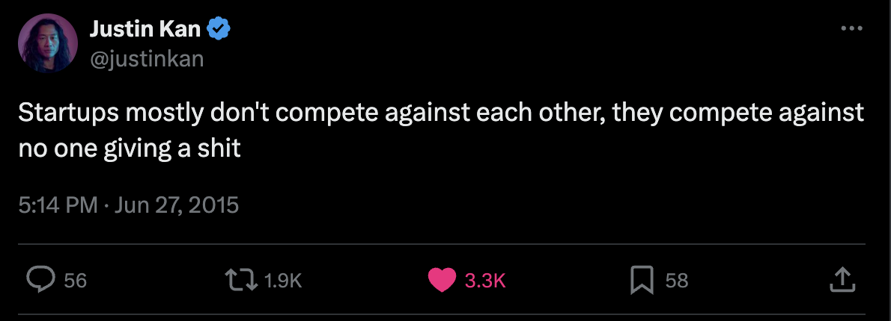
Наша цель — чтобы вы вышли из зоны комфорта и начали показывать свою идею реальным людям. Этот документ даст вам бесконечный запас идей, как сделать это уже сегодня.
Поговорим о страхе и страхе провала
Прежде чем говорить о привлечении внимания, нужно разобраться с вашими страхами. Представьте прямо сейчас: вы пишете твит или пост, например, в LinkedIn о том, что вы создаёте. Звучит страшно, да? «Что люди скажут? Что они обо мне подумают? А вдруг я провалюсь?»
Эти чувства абсолютно нормальны. Но если вы их не преодолеете, вы, скорее всего, никогда ничего не выпустите. Запускаться страшно. Но альтернатива (не получить ни одного пользователя) в 10 раз хуже. Поэтому:
Вам будет казаться, что вы кричите в пустоту.
Вас будут отвергать.
Ваши друзья будут вас осуждать.
95% людей так и не переступают через это — и никогда ничего не создают. Единственный способ это преодолеть — просто сделать. Хватит нескольких раз, и это станет нормой, и вы больше об этом не вспомните.
Если вы на это способны — поздравляю, вы на верном пути к тому, чтобы стать успешным, строить продукты, меняющие мир, и бизнес, меняющий вашу жизнь. Так давайте сделаем это вместе.
Что такое инжиниринг внимания?
Attentioneering (инжиниринг внимания), сущ. — стратегическое использование алгоритмов, психологических приёмов и оптимизации контента, чтобы захватывать и удерживать внимание к бренду, бизнесу или продукту. Часто включает эксплуатацию механик конкретных платформ, трендовых тем и поведенческих инсайтов ради видимости и вовлечения в конкурентной цифровой среде.
Как инжиниринг внимания экономит мне время?
Ваша цель здесь, как и с MVP, — собирать информацию. Внимание. Вовлечение. Комментарии. Email. Номера телефонов. Знание о клиентах. Идеи фич. Эта информация расскажет вам всё, что нужно знать о вашей идее. Она хорошая? Плохая? Нужно ли делать пивот? Где тусуются мои клиенты?
Конечно, вы можете проделать всё это и понять, что ваша идея так себе и её не стоит строить. Но в этом и смысл! Вы должны полностью исчерпать свою идею. Как только вы это сделаете — вы будете знать.
Вот вопросы, которые стоит себе задать. Как понять, что вы делаете инжиниринг внимания правильно?
Знают ли ваши друзья и семья о вашем новом бизнесе?
Получали ли вы отказы?
Задевали ли ваши чувства?
Получали ли негативную обратную связь?
Как вы справлялись с негативной обратной связью?
Были ли моменты, когда хотелось сдаться? Как вы прорвались?
Сильно ли изменились ваш продукт/оффер после запуска?
Писали ли вы случайным людям о своей штуке?
Если вы ответили «да» на некоторые или все эти вопросы — значит, вы делаете всё правильно. И даже если идея окажется плохой, вы получите информацию о том, что нужно менять, куда пивотить или что попробовать ещё.
Если вы ответили «нет» на большинство — пересмотрите, действительно ли вы полностью исчерпали свою идею и свои ресурсы.
Как планировать инжиниринг внимания
В этом документе я поделюсь десятками примеров того, как привлечь внимание к вашей идее. Идей так много, что это может ошеломлять. Поэтому вот мой совет, как действовать максимально эффективно.
Фреймворк LEHI
Смотрите… все разные. У всех разные навыки. У всех разные знания. Если вы хороший автор — возможно, стоит опереться на LinkedIn. Если вы мастер видео — сфокусируйтесь на платформах, заточенных под видео. Если вы король мемов — может, вы зайдёте вирусно на X. Если у вас куча связей в индустрии — сделайте упор на прямой аутрич к своей сети.
Единственное ограничение — ваше время, поэтому подход такой: как получить максимум глаз на вашей штуке при минимуме работы? Я не могу ответить за вас, потому что мало вас знаю — вы должны разобраться сами.
Мой любимый способ об этом думать — это LEHI. Lowest effort, highest impact — наименьшие усилия, наибольший эффект.
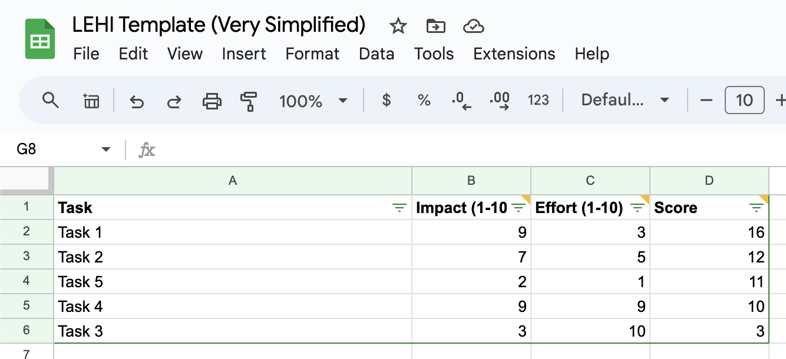
Шаблон LEHI (очень упрощённый)
Пара правил большого пальца
Вовлечение не стоит ничего, если за ним нет намерения
Весь инжиниринг внимания должен иметь цель и вести намерение к вашему продукту. Можно постить про то, что вы ели на завтрак, но это не приведёт продажи к вашему B2B SaaS. Улавливаете? Об этом важно думать, чтобы держать в голове намерение (intent). Смотрите на привлечение внимания именно с этой стороны, а НЕ с точки зрения количества просмотров, подписчиков или вовлечения.
Правило большого пальца: не используйте ИИ
Люди это сразу раскусят — выглядит неискренне, и они не будут взаимодействовать с вашим контентом. Да, вы можете и должны использовать ИИ, чтобы находить идеи, улучшить отдельное слово и т.п. Но я призываю вас тратить своё «глубокое» время на то, чтобы писать отличный текст, оптимизировать под внимание и вкладывать заботу в работу. Это решает всё.
Как пользоваться идеями отсюда
Я поделюсь с вами таким количеством идей, что это может ошеломить. Ваша задача — выбрать те, что действительно цепляют именно вас, прогнать их через фреймворк LEHI и приступить к работе.
Этот документ — work in progress: он будет постоянно дополняться, обновляться, и мы будем собирать идеи от вас, ребята из акселератора, потому что мы видим всё 👀
Каждый пример здесь — это формат: по сути, логика, лежащая в его основе, должна срабатывать многократно и на разных каналах. Воспринимайте эти примеры как шаблоны и подгоняйте под них свой продукт, своё преимущество, свои навыки, свою страсть и т.д. Все эти идеи построены на сильных принципах инжиниринга внимания, и внутри каждой я их объясню.
#1 Личная сеть: «Готово.»
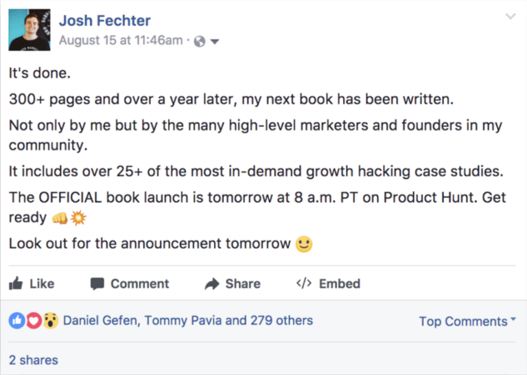
Каналы: LinkedIn, Facebook, Instagram, X и т.д.
Почему это работает: Вы даёте друзьям, коллегам и семье знать, как усердно вы над чем-то работали. Этот человек написал 300 страниц и потратил год! Он также проявляет смелость, публикуя это с риском провала. Людям это нравится. Поэтому они лайкнут, провзаимодействуют — и алгоритм поднимет пост.
Как сделать у себя: Буквально скопируйте текст и замените слова под свою ситуацию. Постарайтесь подчеркнуть, как усердно вы работали, и добавьте драмы. Может, не используйте так много эмодзи :) и, если получится, приложите фото ВАС к посту.
Почему это работает: Здесь всё дело в заголовке. Я знаю того, кто это запостил. Мы оба строили продукты в одно время. До этого он уже постил в сабреддит, и пост набрал 0 апвоутов.
Первая попытка: «Hacksource — поисковик по программистским туториалам».
Вторая попытка: «Потратил последние 6 месяцев на создание поисковика по программистским туториалам, как вам?»
Второй заголовок делает это личным. Просит обратной связи. Он человечнее. И именно это всё изменило.
Как сделать у себя: Найдите сабреддиты, совпадающие с вашим целевым клиентом, и попробуйте. Reddit бывает строг к самопиару, так что пробуйте в разных сабреддитах — и кого волнует, если вас забанят.
Почему это работает: Здесь тоже всё дело в заголовке. Этого человека я тоже знаю — пост сгенерировал сотни тысяч в трафике и платящих клиентов в первый же день. Он делает пару вещей хорошо:
«Я сделал» — это показывает, что вы реальный человек, и людям хочется вас поддержать.
«Privacy-first» (приватность прежде всего) — это идеально описывает аудиторию Hacker News. Они любят приватность и ненавидят Google.
Как сделать у себя: Если ваша идея нацелена на аудиторию Hacker News — попробуйте что-то такое. Если нет — подумайте, как одну фичу можно сделать «дружелюбной к Hacker News». Даже если ваш продукт не интересен аудитории HN, попробовать всё равно стоит. Подумайте, как это сделать в сабреддитах или других местах, где тусуются ваши клиенты. За неимением лучшего слова — подыгрывайте своей аудитории.
Почему это работает: Этот твит превратился в бизнес на $1M в год. Здесь всё дело в вопросе: «Сколько у вас невостребованных airdrop'ов?» Этот вопрос адресует боль, которую решает его продукт. А затем даёт чёткое, простое решение — как получить ответ, используя его приложение. Помогает и то, что с помощью его инструмента можно заработать тысячи долларов. Крипта… ну, как-то так.
Как сделать у себя: Думаю, этот можно скопировать и попробовать. Задайте вопрос, который добирается до корня боли, решаемой вашим продуктом. А затем дайте ссылку на ваше решение. Плюс добавьте визуала, как сделал Доусон. Уверен, это помогло.
Почему это работает: Похоже на пример №1 про личную сеть: вы рассказываете своей сети, что ВЫ что-то построили и усердно над этим работали. Думаю, короткий формат со списком тоже работает, потому что точно говорит людям, что они получат. Завершите релейтбл-мыслью о том, почему это всем нужно и почему это важно.
Как сделать у себя: Можете скопировать это под свой проект. Расскажите людям, что вы построили и сколько это заняло. Добавьте красивое изображение или превью продукта.
#6 Twitter/X: «Я только что уволился» / лайф-апдейт
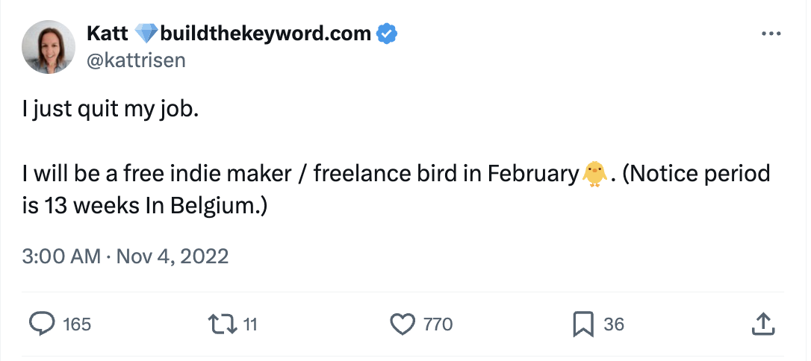
Каналы: Twitter, Instagram, сообщества/форумы
Почему это работает: Обожаю простоту этого твита. Кэтт рассказала, что уволилась с работы, чтобы полностью гнаться за мечтой. Сложно не посочувствовать такой истории. Большинство её подписчиков, скорее всего, поддержат её, как смогут (подпишутся на рассылку, расшарят контент или даже наймут).
Как сделать у себя: Не обязательно увольняться, чтобы запостить нечто подобное 🙂 Просто используйте формат и расскажите о любой свежей новости, которая может заинтересовать людей и вовлечь их в вашу историю.
«Мы все в шести рукопожатиях от Кевина Бейкона, верно? Значит, мы, наверное, в шести рукопожатиях вообще от всех. И вот спрашивать людей, у которых, как я знаю, есть какое-то влияние — пусть даже только в родительском комитете: „Эй, я создаю такую-то штуку. Ты не против поделиться ею? Знаешь кого-нибудь, кому это может быть интересно?“ Именно это, наверное, и привело меня к первым 1000–2000. И я не знала более вирусного способа сделать это, чем такой современный обход дверей. Вот что сработало у меня.»
— Коди Санчес, в подкасте Nathan Barry Podcast
Каналы: Email, ЛС в LinkedIn, ЛС в Instagram, СМС
Почему это работает: Коди Санчес (основательница Contrarian Thinking) получила первую 1000 подписчиков, делая то, что может буквально каждый: она вручную писала друзьям и старым контактам из своего Gmail. Обожаю этот подход — отличный способ задействовать личную сеть, особенно когда у вас ещё нет большой аудитории или базы подписчиков в соцсетях. Это самое простое, что можно сделать прямо сейчас.
Как сделать у себя: Пройдитесь по своим контактам в LinkedIn. Пройдитесь по контактам в телефоне. Пролистайте недавние СМС. Пройдитесь по email. Напишите в ЛС нескольким людям, кто подписан на вас в Instagram. Отправьте им что-то личное и попросите расшарить или узнать, нет ли у них знакомых, кому это может понравиться.
Почему это работает: Это одно из немногих холодных писем, на которые я реально ответил, — и в итоге я даже воспользовался их услугой. Несколько причин, почему оно сработало на мне:
Предлагать услуги бесплатно — отличный способ получить первых клиентов.
Они объяснили, почему так делают, и были честны: «я набираю портфолио» — мне захотелось им помочь.
Мне понравилось, что они упомянули, почему это построили, как пришла идея, и связали это со своим личным опытом использования Starter Story.
Как сделать у себя: Думаю, в таких холодных письмах «меньше — значит больше». Изучите 5–10 компаний, которым был бы полезен ваш продукт/услуга. Подумайте, кого вы хотите в своё «портфолио» и как предложить это бесплатно. Лучшая часть: вам даже не нужен готовый продукт. Попробуйте разжечь интерес и получить несколько «бесплатных» заинтересованных клиентов. Можно буквально скопировать это письмо под своего «клиента мечты».
Эта стратегия — из реального бизнеса, который теперь делает $24K MRR.
Каналы: Quora, Reddit
Почему это работает: Такие посты ранжируются в поисковиках. Вы пишете один комментарий или ответ — и его могут видеть десятки людей годами.
Как сделать у себя: Ищите в Google: site:quora.com [вопрос, который решает ваш продукт]. Оставляйте ответы под топовыми по рейтингу.
Примечание: Важно, чтобы у вопроса было намерение, связанное с вашим продуктом. В этом примере человек просит конкретный инструмент для своего сайта — и продукт Йориса это решает. Если прямого намерения нет, выиграть будет сложно, потому что объём будет небольшим.
Почему это работает: Мы интервьюировали для Starter Story многих, кто делится успехом на IndieHackers. Я заметил, что большинство этих основателей сначала строили сообщество внутри IndieHackers. Это не подход «один выстрел», а серия откровенных постов/апдейтов на платформе, которая позволяет выстроить маленькое сообщество. Думаю, IH — отличная стратегия, но только если вы готовы регулярно постить и строить там сообщество. Это касается всех форумов/публичных каналов.
Как сделать у себя: Окунитесь в сообщество и начните вовлекаться/комментировать/изучать чужие проекты. Приносите пользу другим и поддерживайте их (не просто пиарьте своё). Смотрите на людей на той же стадии, что и вы (до выручки, после выручки и т.д.), и наблюдайте, что заходит. Пролистайте их историю постов. Что сработало? Что нет?
Почему это работает: Люди любят смиренные истории. Фото здесь тоже сильно помогает — конкретно это передаёт «гринд»: сон на надувном матрасе и т.д.
Как сделать у себя: Формат прост:
Расскажите о своём скромном начале.
Расскажите, как вы преодолели эту борьбу и где вы сейчас, и дайте ссылку на то, что строите (это показывает авторитет).
Поделитесь несколькими уроками и сделайте их легко усваиваемыми.
Добавьте убойное фото, как это здесь.
Обязательно отвечайте на каждый комментарий и оптимизируйте био, чтобы там была ссылка на то, что вы строите.
#11 TikTok: простое демо продукта
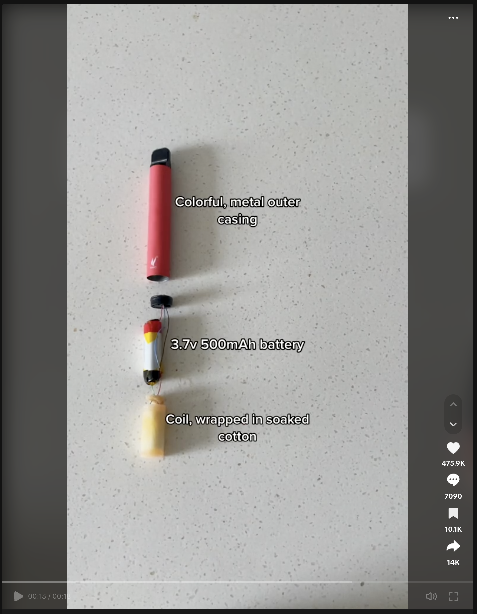
Ссылка на пост.
Каналы: TikTok, IG Reels, YouTube Shorts
Почему это работает: Это единственное видео собирали минуту, а оно привело десятки тысяч регистраций в его приложение.
Как сделать у себя: Я спросил основателя напрямую — его ответ может изменить вашу жизнь.
#12 X: превратите плохую новость в хорошую
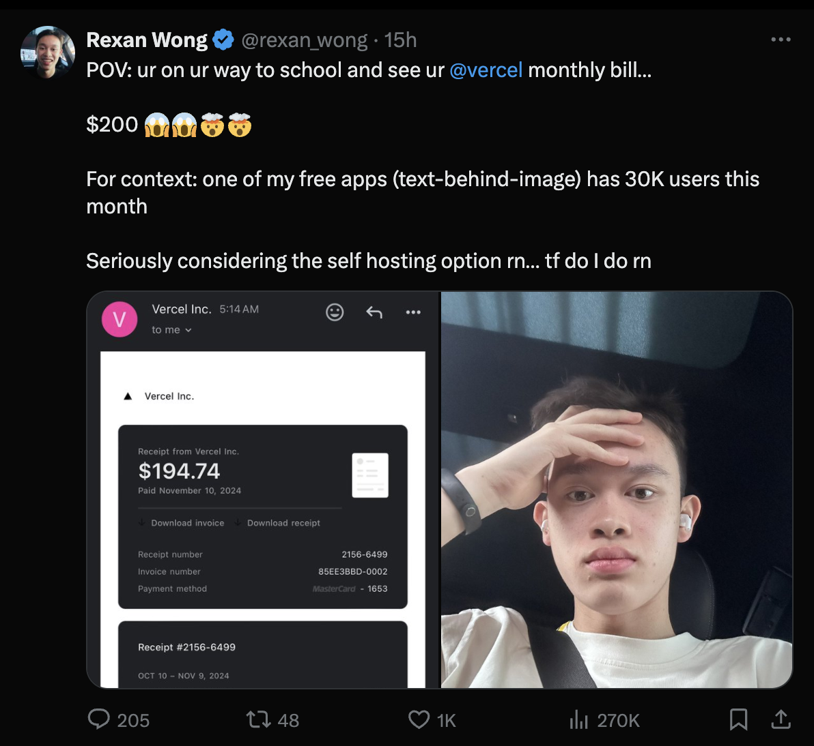
Ссылка на пост.
Каналы: уточняется
Почему это работает: уточняется
Как сделать у себя: уточняется
#13 X: горячее мнение, ведущее намерение
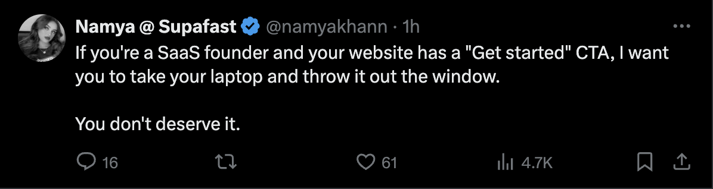
Ссылка на пост.
Каналы: уточняется
Почему это работает: уточняется
Как сделать у себя: уточняется
#14 X: POV
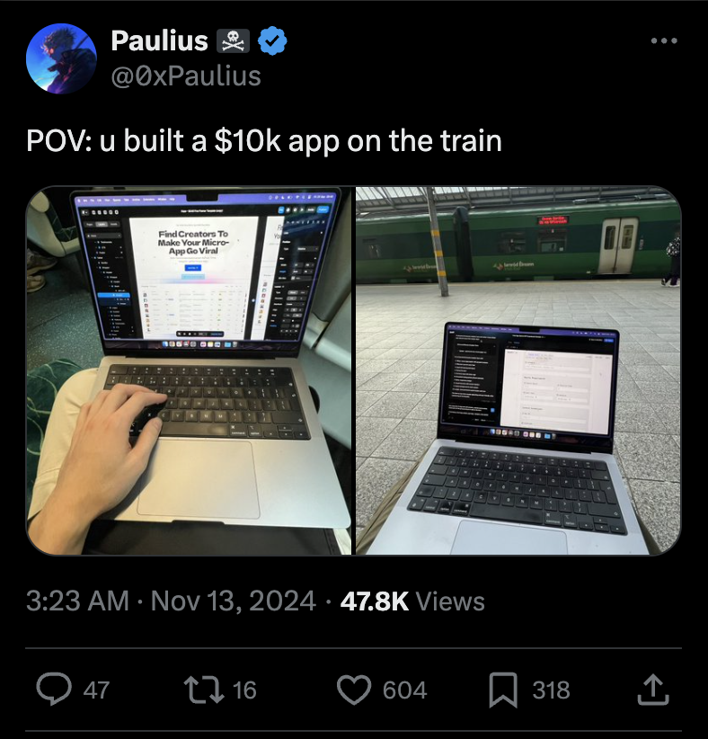
Ссылка на пост.
Каналы: уточняется
Почему это работает: уточняется
Как сделать у себя: уточняется
#15 LinkedIn: слайдшоу «Как я это построил»
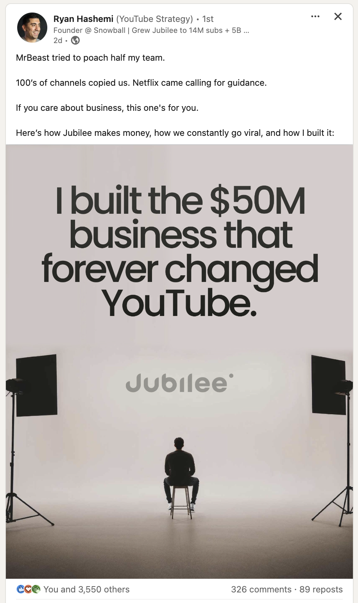
Ссылка на пост.
Каналы: уточняется
Почему это работает: уточняется
Как сделать у себя: уточняется
#16 Начните разговор
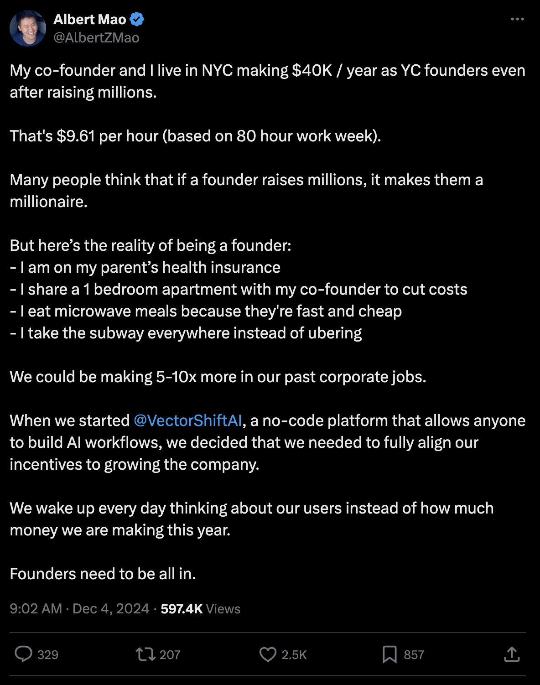
Ссылка на пост.
Каналы: уточняется
Почему это работает: уточняется
Как сделать у себя: уточняется
#17 Twitter/X: «Мне 17, и я построил это»
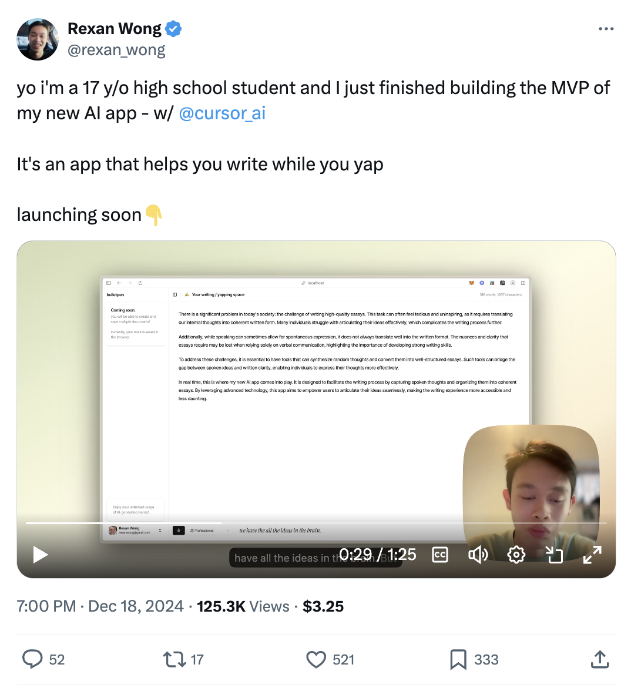
Ссылка на пост.
Каналы: Twitter/X, LinkedIn
Почему это работает: Здесь всё дело в истории. Семнадцатилетний делает ИИ-приложение? Люди это обожают. Это лично и аутентично. Он просто парень, который делится крутой штукой, которую сделал и над которой усердно работал. Видео в Loom усиливает эффект, потому что показывает: он реальный билдер, а не просто говорит об идее. Коротко, просто, честно — поэтому и работает.
Как сделать у себя: Не переусложняйте. Расскажите свою историю так, чтобы это звучало по-настоящему. Если вы молоды, неопытны или только начинаете — опирайтесь на это. Люди любят аутсайдеров. Используйте Loom, чтобы записать короткое, простое видео с демонстрацией продукта.
Будет добавлено в этот документ
Пост Build in Public в LinkedIn — цель.
Пост Build in Public в X.
Запуск на Product Hunt с демо-видео.
Пост Build in Public в Facebook.
Пост Build in Public в Instagram.
Build in public: короткие видео — TikTok/Reels.
Апдейты по выручке / скриншот Stripe: X.
Апдейт о первом долларе / скриншот Stripe: LinkedIn.